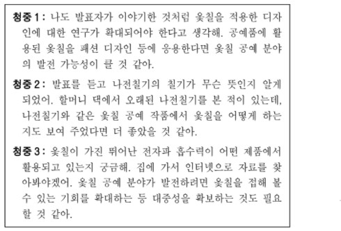

지문 보기(문제1~문제3)

3번. 다음은 학생의 발표를 들은 후 청중이 보인 반응이다. 발표를 고려하여 이를 분석한 내용으로 적절하지 않은 것은?
1.'청중 1'은 발표 내용을 언급하며 발표자의 생각에 공감하고 있군.
2.'청중 2'는 개인적인 경험과 결부지어 발표 내용에서 아쉬웠던 점을 밝히고 있군.
3.'청중 3'은 발표를 들으며 생긴 의문점을 해결하기 위한 방법을 생각하고 있군.
4.'청중 1'과 '청중 3'은 발표에서 소개한 분야의 발전 방향에 대한 생각을 밝히고 있군.
5.'청중 2'와 '청중 3'은 발표를 통해 알게 된 정보를 활용하여 기존 지식을 수정하고 있군.